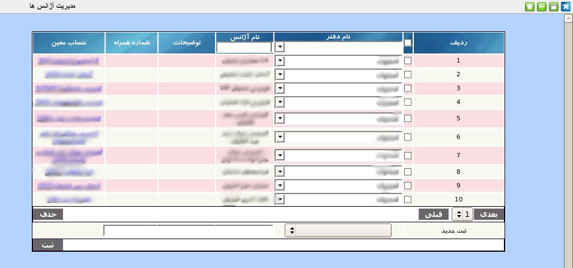

۱-مدیریت آژانس
در قسمت مدیریت آژانس کاربر می تواند یک یا چند آژانس زیر مجموعه دفاتر خود را اضافه و یا حذف کند. همچنین در این پنل امکان ویرایش و انتخاب حساب نیز به کاربر داده می شود.

برای ثبت آژانس جدید از قسمت پایین پنل مدیریت آژانس می توانید ابتدا نام دفتر سرگروه آژانس را انتخاب سپس نام آژانس جدید, توضیحات برای آژانس و شماره تلفن همراه مربوط به آژانس را وارد نمایید سپس بر روی دکمه ثبت کلیک کنید. پس از ثبت آژانس حساب معین به طور خودکار توسط نرم افزار ایجاد می شود و در صورت نیاز می توانید آن را از ستون حساب معین با کلیک بر روی لینک نمایش داده شده و ورود به صفحه انتخاب حساب تولید شده را به حساب مورد نظر برای آژانس تغییر دهید.
صفحه ی انتخاب حساب شامل دو لیست از حساب های کل تعریف شده و معین های این حساب ها می باشد.برای انتخاب, ابتدا حساب کل سپس حساب معین مورد نظر را انتخاب و بر روی دکمه انتخاب کلیک نمایید.

جهت ویرایش مقادیر هر آیتم بر روی آن کلیک نمایید و پس از تصحیح کلید Enter را بزنید.
جهت حذف تکی هر آیتم, موس خود را بر روی شماره ردیف آیتم برده و بر روی لینک حذف کلیک نمایید.
جهت حذف گروهی آیتم ها, آیتم های مورد نظر را انتخاب و بر روی دکمه حذف کلیک نمایید.
برای جستجوی آژانس های یک دفتر خاص می توانید نام دفتر را از قسمت عنوان دفتر انتخاب کنید و لیست آژانس های دفتر مربوطه را مشاهده نمایید. همچنین برای جستجوی یک آژانس خاص می توانید نام آژانس را بر روی عنوان ستون آژانس نوشته و کلیلد Enter را بزنید سپس اطلاعات آژانس مربط نمایش داده می شود.